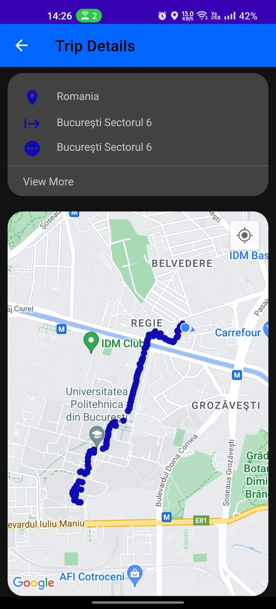
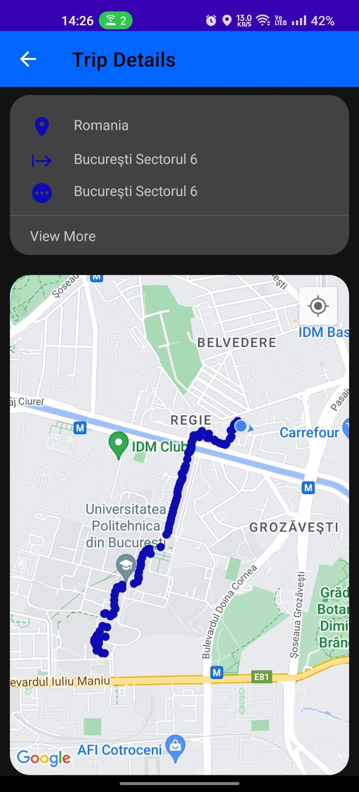

Urmărire Avansată cu Precizie de Înaltă Tehnologie GPS pentru localizare excepțional de exactă.
Îmbunătățirea eficienței prin monitorizarea activelor și a personalului în timp real.
Asigurarea securității prin monitorizare constantă și capacități rapide de răspuns.

 

Contactează-ne pentru o demonstrație personalizată sau pentru mai multe informații.
Solicită o Demonstrare